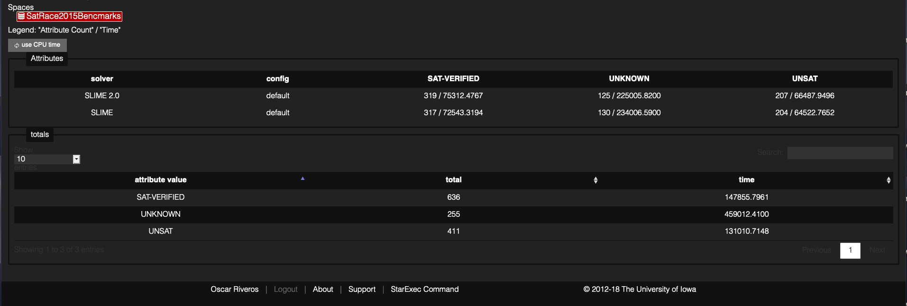
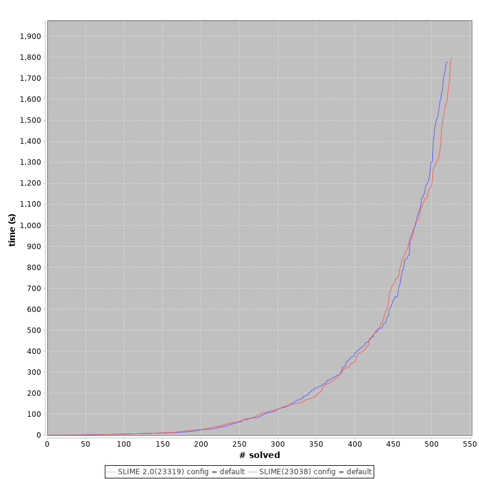
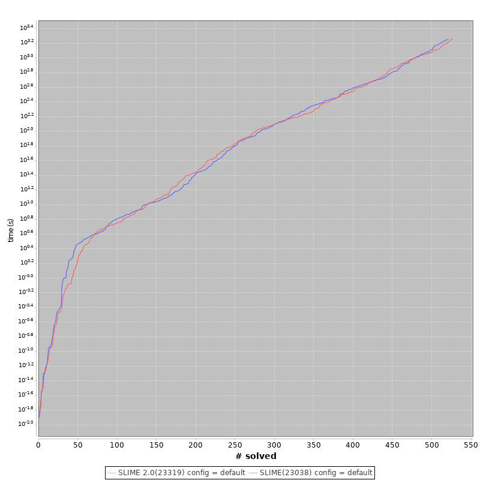

SLIME 2.1: A Free World Class High Performance SAT Solver
- Full ANSI C++
- Remove ZLib dependency
- Extreme simplification of unused components
- 2.0 performance
- More compatibility with all OS.
SLIME 2.0: A Free World Class High Performance SAT Solver
SAT Race 2015
v1.0 PAR-2 605079.2646
v2.0 PAR-2 591812.0663
(The solvers will ranked using the PAR-2 scheme: The score of a solver is defined as the sum of all runtimes for solved instances + 2*timeout for unsolved instances, lowest score wins.)



SLIME: A Minimal Heuristic to Boost SAT Solving
On CDCL Based SAT Solvers the trail size is strictly related to progress or to the total conflicts on the current assignment,
such that if the trail size is the same that the number of variables, then current assignment is valid.
On the other hand, in the selection of the current variable it is necessary to assign a predetermined polarity to the resulting literal, which in most implementations is a predefined value.
SLIME implement a simple heuristic with minimal complexity, that correlated the trail size and the polarity of the current variable to assign.
The selection of variable is not related to trail size, this decouple the both concepts.